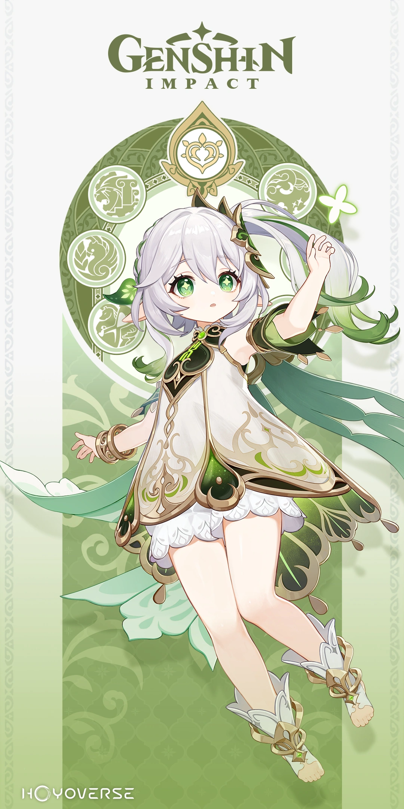
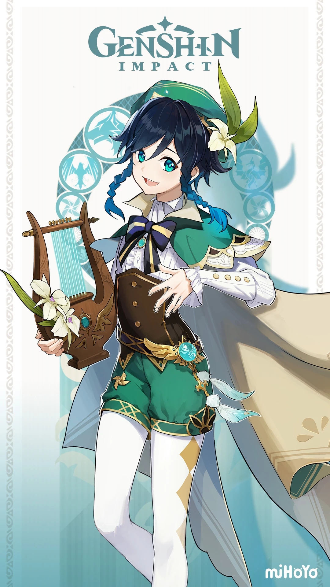

HISTÓRIAS SOBRE OS ARCONTES (^W^)
Raiden Shogun

Desde o início da vida, a humanidade sempre carregou um intenso anseio e curiosidade sobre o mundo. Este é o
ponto de sustentação de seu conhecimento e é o fundamento de toda a razão.
O mundo do povo de Inazuma também é assim. Ali, trovão, relâmpago, vento e chuva eram fatos primordiais da
vida, assim como a luz, o mar... E a Shogun Raiden.
As crianças aconchegadas nos braços de suas mães ouvem histórias sobre o assassinato de muitos deuses pela
Shogun e a conquista de outras raças.
Quando jovens homens e mulheres perambulam pelas ilhas, eles veem o desfiladeiro dividido por uma lâmina de
relâmpago e os ossos pálidos e intactos da cobra gigante.
Os soldados vão para o campo de batalha com "glória a Shogun e seu eterno reinado" em seus lábios.
O povo trabalha em contentamento e paz, sabendo que a Shogun e sua fiel Comissão Tripla estão lá.
O grande nome da Shogun Raiden há muito tempo sacudiu os grilhões da vida simples, tornando-se a eterna
crença tradicional de Inazuma.
As pessoas confiam neste grande nome e neste poder, acreditando que seus descendentes testemunharão as
mesmas visões, que a mesma fé formará os alicerces de seu mundo interior, e que isto passará de geração em
geração.
Este é o eterno paraíso que a Toda-Poderosa Shogun prometeu ao seu povo.
Nahida

A Lorde Maior Rukkhadevata criou a floresta tropical e utilizou a Academia para transmitir seu conhecimento para
o povo. Mesmo que ela partisse deste mundo, seu reputado nome persistiria histórias das canções conhecidas.
E a Lorde Menor Kusanali, recebida pelos Sábios no Santuário de Surasthana após o falecimento dessa deusa
assemelhava-se mais a um símbolo, símbolo que anunciava que a proteção desta deusa nunca havia desaparecido
desta terra.
Mas, quem ela era, como ela nasceu, quais poderes possuía? Cada vez menos pessoas compreendiam a resposta dessa
pergunta.
O povo gradualmente obteve suas respostas percebendo as evasões dos Sábios sobre a Lorde Menor Kusanali, e
passaram a não esperar mais que a sabedoria divina caísse do céu.
O Akasha é eficiente como sempre foi. Foi uma das bênçãos deixadas pela Lorde Maior Rukkhadevata. O que as
pessoas não sabem é que o Akasha de hoje também se tornou os ouvidos e os olhos da deusa recém-nascida.
Ela usa o Akasha para viajar entre as alegrias, tristezas e sofrimentos do povo. Ela também compreende sua
adoração pela antiga deusa e o desapontamento com a nova, como as vozes que dizem "a Deusa da Sabedoria não
existe mais".
No fundo, ela sabe que precisa estudar constantemente crescer o mais rápido possível para enfrentar as ameaças
dos lugares mais profundos desta terra. Esse é um destino que ela é incapaz de evitar.
Apesar de tudo isso, Nahida não se importa se ela não é compreendida ou valorizada.
Zhongli

Nas tradições de Liyue, "Receber os Adepti" e "Se Despedir dos Adepti" são igualmente importantes.
Os Hus da Funerária de Wangsheng, que estão neste negócio há 77 gerações, são mestres em funerais. Entretanto,
Hutao, a diretora atual da Funerária de Wangsheng se foca na arte de se despedir dos mortais.
Para as várias cerimônias de despedida dos Adepti, Hutao emprega a ajuda de um amigo que se dedica ao mesmo
negócio: Zhongli. Os Adepti conviveram com o povo de Liyue por milênios, mas só um punhado deles ascendeu em
três mil anos, o que significa que, atualmente, tudo relacionado com essas tradições só existe nos textos. Isso
não é algo que uma pessoa testemunharia duas vezes durante toda sua vida.
Nem mesmo os mais eruditos pesquisadores poderiam encontrar um defeito na cerimônia de despedida dos Adepti da
Funerária Wangsheng.
Tudo deve ser perfeito. As roupas, o horário, o local, os itens, o clima, a duração, o tamanho do público, a
altura, profissão e idade desse público. Nada pode passar em branco.
Quando as pessoas descrevem Zhongli como "história viva", ele geralmente sorri e suspira.
"Eu só tenho uma boa memória".
Venti

Venti é um dos personagens masculinos jogáveis do jogo chinês Genshin Impact, produzido e distribuído pela miHoYo. Assim como os demais intérpretes que o jogador pode ter em mãos, Venti também pode ser obtido através do sistema de “gacha”, nomeado no jogo de “Wishes”, ou “Desejos”, sendo necessário a posse de Acquaint Fates (Destino Familiar) para conseguir pedir às estrelas por algum “loot” (tanto os equipamentos quanto os personagens vêm dessa forma, como cometas que vieram do céu, por assim dizer). Na versão original, o Windborne Bard, também intitulado de Singer of Skyward Sonnets, é dublado por Miaojiang (喵酱), enquanto nas versões japonesa, coreana e inglesa a sua voz foi feita por Ayumu Murase (村瀬 歩), Jung Yoo-jung (정유정) e Erika Harlacher, respectivamente. Na narrativa de Teyvat, o mundo que compõe Genshin, Venti é o primeiríssimo personagem que Paimon e Traveller encontram, isso porque se deparam, no meio da floresta em direção à ilha de Mondstadt, com um enorme dragão — o qual, posteriormente, passou a conheça como Stormterror —, sendo que o jovem bardo está ao lado dele, como se estivesse dialogando com uma criatura majestosa. Com a progressão da história de Genshin Impact, vamos encontrar mais intérpretes e, aos poucos, conhecer cada vez mais acerca de Venti e os mistérios que o rondam. Com isso, descobriu que o Bardo do Vento é nada mais nada menos que um espírito elemental sem forma definida e que a aparência que está usando é a de um humano que morreu na guerra de Mondstadt há muitos anos. Foi somente após a ocorrência dessa guerra civil na ilha que o povo pôde ser liberado do tirano que os governava e ver o nascimento de um novo Arconte, este que seria Barbatos, o Arconte do elemento Anemo (praticamente o deus do vento). É natural que, diante do surgimento de um Arconte, este passe a ter controle sobre a terra que corresponde ao seu elemento e, consequentemente, o povo que habita nela. Quanto maior for esse domínio, maior será o poder do Arconte, e é por esse motivo que estes sete grandes espíritos são considerados e aclamados como divindades pelos humanos de Teyvat. Por Barbatos (ou Venti) não deseja esse controle em Mondstadt — até por ter libertado o povo anteriormente —, ele é um Arconte muito fraco e que, possivelmente, perderia para qualquer outro, como Tsaritsa, um Arconte de Cryo que domina Snezhnaya com supremacia e comanda os Fatui.
Furina

Acredito que desde o primeiro momento em que Furina assumiu a posição de Arconte Hydro, as pessoas de Fontaine imediatamente gostaram dela.
Suas palavras carismáticas e movimentos excêntricos imediatamente a fizeram ganhar o charme de uma divindade.
O que talvez mais mereça reconhecimento de Furina é o seu senso de humor inigualável para óperas.
Assim como as palavras em um roteiro da Ópera Epiclese:
"A vida é como uma peça. Você nunca consegue prever o que vai acontecer no próximo capítulo".
Furina também é bem enigmática. Nunca é possível saber para o que ela está se preparando.
Mas é justamente por causa disso que a Deusa da Justiça e Julgamento que ocupa este assento divino é tão fascinante.
Entretanto, quando as cortinas da alegria fecham as pessoas sentem um vazio.
Será que uma deusa como Furina já se sentiu solitária no meio de uma noite?
O povo não consegue imaginar, e acredita que uma cena como essa jamais acontecerá.
Sim, essa deve ser a verdade.
Se não fosse pela Água da Nascente da Fonte de Lucine... silenciosamente aceitando as lágrimas de Furina.